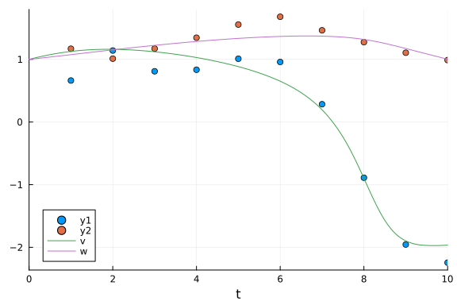

Fitzhugh-Nagumo Bayesian Parameter Estimation Benchmarks
using DiffEqBayes, BenchmarkToolsusing OrdinaryDiffEq, RecursiveArrayTools, Distributions, ParameterizedFunctions,
StanSample, DynamicHMC
using Plots, StaticArrays, Turing, LinearAlgebragr(fmt = :png)Plots.GRBackend()Defining the problem.
The FitzHugh-Nagumo model is a simplified version of Hodgkin-Huxley model and is used to describe an excitable system (e.g. neuron).
fitz = @ode_def FitzhughNagumo begin
dv = v - 0.33*v^3 - w + l
dw = τinv*(v + a - b*w)
end a b τinv lMain.var"##WeaveSandBox#225".FitzhughNagumo{Main.var"##WeaveSandBox#225".va
r"###ParameterizedDiffEqFunction#227", Main.var"##WeaveSandBox#225".var"###
ParameterizedTGradFunction#228", Main.var"##WeaveSandBox#225".var"###Parame
terizedJacobianFunction#229", Nothing, Nothing, ModelingToolkit.System}(Mai
n.var"##WeaveSandBox#225".var"##ParameterizedDiffEqFunction#227", LinearAlg
ebra.UniformScaling{Bool}(true), nothing, Main.var"##WeaveSandBox#225".var"
##ParameterizedTGradFunction#228", Main.var"##WeaveSandBox#225".var"##Param
eterizedJacobianFunction#229", nothing, nothing, nothing, nothing, nothing,
nothing, nothing, [:v, :w], :t, nothing, Model ##Parameterized#226:
Equations (2):
2 standard: see equations(##Parameterized#226)
Unknowns (2): see unknowns(##Parameterized#226)
v(t)
w(t)
Parameters (4): see parameters(##Parameterized#226)
a
b
τinv
l, nothing, nothing)prob_ode_fitzhughnagumo = ODEProblem(fitz, [1.0, 1.0], (0.0, 10.0), [0.7, 0.8, 1/12.5, 0.5])
sol = solve(prob_ode_fitzhughnagumo, Tsit5())retcode: Success
Interpolation: specialized 4th order "free" interpolation
t: 13-element Vector{Float64}:
0.0
0.1502916178003539
0.6611860158920579
1.4391493908273403
2.589451591547814
3.7602377960785525
5.101014337183989
6.709997524274457
7.604553475030161
8.336547696252527
9.031279335406245
9.556400185811816
10.0
u: 13-element Vector{Vector{Float64}}:
[1.0, 1.0]
[1.0247192356111163, 1.0109189409610948]
[1.0944137341238236, 1.049239334584406]
[1.1525604472298034, 1.1092965960073389]
[1.1446577625483763, 1.1952738138449215]
[1.0557695077719018, 1.2718985818139574]
[0.8659598744812588, 1.3388184800875969]
[0.36758540211725504, 1.3735376018319743]
[-0.3594427955481789, 1.3493319650351683]
[-1.3772889489189244, 1.278171118435909]
[-1.9056998397130338, 1.1680023987534764]
[-1.9707492736430954, 1.077729156517589]
[-1.9650453438870357, 1.0031251492628297]sprob_ode_fitzhughnagumo = ODEProblem{false, SciMLBase.FullSpecialize}(
fitz, SA[1.0, 1.0], (0.0, 10.0), SA[0.7, 0.8, 1 / 12.5, 0.5])
sol = solve(sprob_ode_fitzhughnagumo, Tsit5())retcode: Success
Interpolation: specialized 4th order "free" interpolation
t: 13-element Vector{Float64}:
0.0
0.1502916178003539
0.6611860158920579
1.4391493908273403
2.589451591547814
3.7602377960785525
5.101014337183989
6.709997524274457
7.604553475030161
8.336547696252527
9.031279335406245
9.556400185811816
10.0
u: 13-element Vector{StaticArraysCore.SVector{2, Float64}}:
[1.0, 1.0]
[1.0247192356111163, 1.0109189409610948]
[1.0944137341238236, 1.049239334584406]
[1.1525604472298034, 1.1092965960073389]
[1.1446577625483763, 1.1952738138449215]
[1.0557695077719018, 1.2718985818139574]
[0.8659598744812588, 1.3388184800875969]
[0.36758540211725504, 1.3735376018319743]
[-0.3594427955481789, 1.3493319650351683]
[-1.3772889489189244, 1.278171118435909]
[-1.9056998397130338, 1.1680023987534764]
[-1.9707492736430954, 1.077729156517589]
[-1.9650453438870357, 1.0031251492628297]Data is generated by adding noise to the solution obtained above.
t = collect(range(1, stop = 10, length = 10))
sig = 0.20
data = convert(Array, VectorOfArray([(sol(t[i]) + sig*randn(2)) for i in 1:length(t)]))2×10 Matrix{Float64}:
1.0724 1.0841 1.31174 0.863462 … -0.741135 -1.92516 -2.14103
0.989612 1.35783 1.45561 1.48824 1.16961 1.29289 1.06208Plot of the data and the solution.
scatter(t, data[1, :])
scatter!(t, data[2, :])
plot!(sol)
Priors for the parameters which will be passed for the Bayesian Inference
priors = [truncated(Normal(1.0, 0.5), 0, 1.5), truncated(Normal(1.0, 0.5), 0, 1.5),
truncated(Normal(0.0, 0.5), 0.0, 0.5), truncated(Normal(0.5, 0.5), 0, 1)]4-element Vector{Distributions.Truncated{Distributions.Normal{Float64}, Dis
tributions.Continuous, Float64, Float64, Float64}}:
Truncated(Distributions.Normal{Float64}(μ=1.0, σ=0.5); lower=0.0, upper=1.
5)
Truncated(Distributions.Normal{Float64}(μ=1.0, σ=0.5); lower=0.0, upper=1.
5)
Truncated(Distributions.Normal{Float64}(μ=0.0, σ=0.5); lower=0.0, upper=0.
5)
Truncated(Distributions.Normal{Float64}(μ=0.5, σ=0.5); lower=0.0, upper=1.
0)Benchmarks
Stan.jl backend
@time bayesian_result_stan = stan_inference(
prob_ode_fitzhughnagumo, t, data, priors; delta = 0.65, num_samples = 10_000,
print_summary = false, vars = (DiffEqBayes.StanODEData(), InverseGamma(2, 3)))Error: MethodError: no method matching stan_inference(::SciMLBase.ODEProble
m{Vector{Float64}, Tuple{Float64, Float64}, true, Vector{Float64}, Main.var
"##WeaveSandBox#225".FitzhughNagumo{Main.var"##WeaveSandBox#225".var"###Par
ameterizedDiffEqFunction#227", Main.var"##WeaveSandBox#225".var"###Paramete
rizedTGradFunction#228", Main.var"##WeaveSandBox#225".var"###ParameterizedJ
acobianFunction#229", Nothing, Nothing, ModelingToolkit.System}, Base.Pairs
{Symbol, Union{}, Tuple{}, @NamedTuple{}}, SciMLBase.StandardODEProblem}, :
:Vector{Float64}, ::Matrix{Float64}, ::Vector{Distributions.Truncated{Distr
ibutions.Normal{Float64}, Distributions.Continuous, Float64, Float64, Float
64}}, ::Nothing; delta::Float64, num_samples::Int64, print_summary::Bool, v
ars::Tuple{DiffEqBayes.StanODEData, Distributions.InverseGamma{Float64}})
Closest candidates are:
stan_inference(::SciMLBase.AbstractSciMLProblem, ::Any, ::Any, ::Any, ::A
ny; stanmodel, likelihood, vars, sample_u0, solve_kwargs, diffeq_string, sa
mple_kwargs, output_format, print_summary, tmpdir) got unsupported keyword
arguments "delta", "num_samples"
@ DiffEqBayes /cache/julia-buildkite-plugin/depots/5b300254-1738-4989-ae
0a-f4d2d937f953/packages/DiffEqBayes/gFKkQ/src/stan_inference.jl:57
stan_inference(::SciMLBase.AbstractSciMLProblem, ::Any, ::Any, ::Any; ...
)
@ DiffEqBayes /cache/julia-buildkite-plugin/depots/5b300254-1738-4989-ae
0a-f4d2d937f953/packages/DiffEqBayes/gFKkQ/src/stan_inference.jl:57Direct Turing.jl
@model function fitlv(data, prob)
# Prior distributions.
σ ~ InverseGamma(2, 3)
a ~ truncated(Normal(1.0, 0.5), 0, 1.5)
b ~ truncated(Normal(1.0, 0.5), 0, 1.5)
τinv ~ truncated(Normal(0.0, 0.5), 0.0, 0.5)
l ~ truncated(Normal(0.5, 0.5), 0, 1)
# Simulate Lotka-Volterra model.
p = SA[a, b, τinv, l]
_prob = remake(prob, p = p)
predicted = solve(_prob, Tsit5(); saveat = t)
# Observations.
for i in 1:length(predicted)
data[:, i] ~ MvNormal(predicted[i], σ^2 * I)
end
return nothing
end
model = fitlv(data, sprob_ode_fitzhughnagumo)
@time chain = sample(model, Turing.NUTS(0.65), 10000; progress = false)75.807597 seconds (292.42 M allocations: 22.407 GiB, 4.93% gc time, 33.08%
compilation time: <1% of which was recompilation)
Chains MCMC chain (10000×19×1 Array{Float64, 3}):
Iterations = 1001:1:11000
Number of chains = 1
Samples per chain = 10000
Wall duration = 63.29 seconds
Compute duration = 63.29 seconds
parameters = σ, a, b, τinv, l
internals = n_steps, is_accept, acceptance_rate, log_density, hamil
tonian_energy, hamiltonian_energy_error, max_hamiltonian_energy_error, tree
_depth, numerical_error, step_size, nom_step_size, logprior, loglikelihood,
logjoint
Summary Statistics
parameters mean std mcse ess_bulk ess_tail rha
t ⋯
Symbol Float64 Float64 Float64 Float64 Float64 Float6
4 ⋯
σ 0.2558 0.0518 0.0009 3089.4986 3260.6092 1.000
7 ⋯
a 0.9560 0.3164 0.0049 4245.0104 4361.2728 1.000
3 ⋯
b 0.8996 0.3121 0.0051 3724.4158 4219.0973 1.001
5 ⋯
τinv 0.0688 0.0311 0.0008 1773.1781 1595.3976 1.002
0 ⋯
l 0.4815 0.0667 0.0015 2117.4782 2239.2364 1.002
2 ⋯
1 column om
itted
Quantiles
parameters 2.5% 25.0% 50.0% 75.0% 97.5%
Symbol Float64 Float64 Float64 Float64 Float64
σ 0.1789 0.2196 0.2481 0.2824 0.3801
a 0.2751 0.7446 0.9884 1.2017 1.4534
b 0.2387 0.6913 0.9243 1.1366 1.4190
τinv 0.0217 0.0458 0.0645 0.0865 0.1421
l 0.3666 0.4358 0.4755 0.5207 0.6342Turing.jl backend
@time bayesian_result_turing = turing_inference(
prob_ode_fitzhughnagumo, Tsit5(), t, data, priors; num_samples = 10_000)Error: MethodError: no method matching turing_inference(::SciMLBase.ODEProb
lem{Vector{Float64}, Tuple{Float64, Float64}, true, Vector{Float64}, Main.v
ar"##WeaveSandBox#225".FitzhughNagumo{Main.var"##WeaveSandBox#225".var"###P
arameterizedDiffEqFunction#227", Main.var"##WeaveSandBox#225".var"###Parame
terizedTGradFunction#228", Main.var"##WeaveSandBox#225".var"###Parameterize
dJacobianFunction#229", Nothing, Nothing, ModelingToolkit.System}, Base.Pai
rs{Symbol, Union{}, Tuple{}, @NamedTuple{}}, SciMLBase.StandardODEProblem},
::OrdinaryDiffEqTsit5.Tsit5{typeof(OrdinaryDiffEqCore.trivial_limiter!), t
ypeof(OrdinaryDiffEqCore.trivial_limiter!), Static.False}, ::Vector{Float64
}, ::Matrix{Float64}, ::Vector{Distributions.Truncated{Distributions.Normal
{Float64}, Distributions.Continuous, Float64, Float64, Float64}}; num_sampl
es::Int64)
Closest candidates are:
turing_inference(::SciMLBase.AbstractSciMLProblem, ::Any, ::Any, ::Any, :
:Any; likelihood_dist_priors, likelihood, syms, sample_u0, progress, solve_
kwargs, sample_args, sample_kwargs) got unsupported keyword argument "num_s
amples"
@ DiffEqBayes /cache/julia-buildkite-plugin/depots/5b300254-1738-4989-ae
0a-f4d2d937f953/packages/DiffEqBayes/gFKkQ/src/turing_inference.jl:1Conclusion
FitzHugh-Ngumo is a standard problem for parameter estimation studies. In the FitzHugh-Nagumo model the parameters to be estimated were [0.7,0.8,0.08,0.5]. dynamichmc_inference has issues with the model and hence was excluded from this benchmark.
Appendix
These benchmarks are a part of the SciMLBenchmarks.jl repository, found at: https://github.com/SciML/SciMLBenchmarks.jl. For more information on high-performance scientific machine learning, check out the SciML Open Source Software Organization https://sciml.ai.
To locally run this benchmark, do the following commands:
using SciMLBenchmarks
SciMLBenchmarks.weave_file("benchmarks/BayesianInference","DiffEqBayesFitzHughNagumo.jmd")Computer Information:
Julia Version 1.10.10
Commit 95f30e51f41 (2025-06-27 09:51 UTC)
Build Info:
Official https://julialang.org/ release
Platform Info:
OS: Linux (x86_64-linux-gnu)
CPU: 128 × AMD EPYC 7502 32-Core Processor
WORD_SIZE: 64
LIBM: libopenlibm
LLVM: libLLVM-15.0.7 (ORCJIT, znver2)
Threads: 1 default, 0 interactive, 1 GC (on 128 virtual cores)
Environment:
JULIA_CPU_THREADS = 128
JULIA_DEPOT_PATH = /cache/julia-buildkite-plugin/depots/5b300254-1738-4989-ae0a-f4d2d937f953:
Package Information:
Status `/cache/build/exclusive-amdci3-0/julialang/scimlbenchmarks-dot-jl/benchmarks/BayesianInference/Project.toml`
[6e4b80f9] BenchmarkTools v1.6.3
[ebbdde9d] DiffEqBayes v3.11.0
[459566f4] DiffEqCallbacks v4.12.0
[31c24e10] Distributions v0.25.123
[bbc10e6e] DynamicHMC v3.6.0
[1dea7af3] OrdinaryDiffEq v6.108.0
⌃ [65888b18] ParameterizedFunctions v5.19.0
[91a5bcdd] Plots v1.41.6
[731186ca] RecursiveArrayTools v3.48.0
[31c91b34] SciMLBenchmarks v0.1.3
[c1514b29] StanSample v7.10.2
[90137ffa] StaticArrays v1.9.17
[fce5fe82] Turing v0.42.8
[37e2e46d] LinearAlgebra
Info Packages marked with ⌃ have new versions available and may be upgradable.And the full manifest:
Status `/cache/build/exclusive-amdci3-0/julialang/scimlbenchmarks-dot-jl/benchmarks/BayesianInference/Manifest.toml`
[47edcb42] ADTypes v1.21.0
[621f4979] AbstractFFTs v1.5.0
[80f14c24] AbstractMCMC v5.14.0
⌅ [7a57a42e] AbstractPPL v0.13.6
[1520ce14] AbstractTrees v0.4.5
[7d9f7c33] Accessors v0.1.43
[79e6a3ab] Adapt v4.4.0
[0bf59076] AdvancedHMC v0.8.3
[5b7e9947] AdvancedMH v0.8.10
[576499cb] AdvancedPS v0.7.2
[b5ca4192] AdvancedVI v0.6.2
[66dad0bd] AliasTables v1.1.3
[dce04be8] ArgCheck v2.5.0
[ec485272] ArnoldiMethod v0.4.0
[4fba245c] ArrayInterface v7.22.0
[4c555306] ArrayLayouts v1.12.2
[13072b0f] AxisAlgorithms v1.1.0
[39de3d68] AxisArrays v0.4.8
[198e06fe] BangBang v0.4.8
[9718e550] Baselet v0.1.1
[6e4b80f9] BenchmarkTools v1.6.3
[e2ed5e7c] Bijections v0.2.2
[76274a88] Bijectors v0.15.16
[d1d4a3ce] BitFlags v0.1.9
[62783981] BitTwiddlingConvenienceFunctions v0.1.6
[8e7c35d0] BlockArrays v1.9.3
[70df07ce] BracketingNonlinearSolve v1.10.0
[2a0fbf3d] CPUSummary v0.2.7
[336ed68f] CSV v0.10.16
[082447d4] ChainRules v1.73.0
[d360d2e6] ChainRulesCore v1.26.0
[0ca39b1e] Chairmarks v1.3.1
[9e997f8a] ChangesOfVariables v0.1.10
[fb6a15b2] CloseOpenIntervals v0.1.13
[944b1d66] CodecZlib v0.7.8
[35d6a980] ColorSchemes v3.31.0
[3da002f7] ColorTypes v0.12.1
[c3611d14] ColorVectorSpace v0.11.0
[5ae59095] Colors v0.13.1
⌅ [861a8166] Combinatorics v1.0.2
⌅ [a80b9123] CommonMark v0.10.3
[38540f10] CommonSolve v0.2.6
[bbf7d656] CommonSubexpressions v0.3.1
[f70d9fcc] CommonWorldInvalidations v1.0.0
[34da2185] Compat v4.18.1
[5224ae11] CompatHelperLocal v0.1.29
[b152e2b5] CompositeTypes v0.1.4
[a33af91c] CompositionsBase v0.1.2
[2569d6c7] ConcreteStructs v0.2.3
[f0e56b4a] ConcurrentUtilities v2.5.1
[8f4d0f93] Conda v1.10.3
[88cd18e8] ConsoleProgressMonitor v0.1.2
[187b0558] ConstructionBase v1.6.0
[d38c429a] Contour v0.6.3
[adafc99b] CpuId v0.3.1
[a8cc5b0e] Crayons v4.1.1
[9a962f9c] DataAPI v1.16.0
[a93c6f00] DataFrames v1.8.1
[864edb3b] DataStructures v0.19.3
[e2d170a0] DataValueInterfaces v1.0.0
[244e2a9f] DefineSingletons v0.1.2
[8bb1440f] DelimitedFiles v1.9.1
[b429d917] DensityInterface v0.4.0
[2b5f629d] DiffEqBase v6.210.0
[ebbdde9d] DiffEqBayes v3.11.0
[459566f4] DiffEqCallbacks v4.12.0
[77a26b50] DiffEqNoiseProcess v5.27.0
[163ba53b] DiffResults v1.1.0
[b552c78f] DiffRules v1.15.1
[a0c0ee7d] DifferentiationInterface v0.7.16
[8d63f2c5] DispatchDoctor v0.4.28
[b4f34e82] Distances v0.10.12
[31c24e10] Distributions v0.25.123
[ced4e74d] DistributionsAD v0.6.58
[ffbed154] DocStringExtensions v0.9.5
[5b8099bc] DomainSets v0.7.16
[bbc10e6e] DynamicHMC v3.6.0
[366bfd00] DynamicPPL v0.39.14
[7c1d4256] DynamicPolynomials v0.6.4
[06fc5a27] DynamicQuantities v1.11.0
[cad2338a] EllipticalSliceSampling v2.0.0
[4e289a0a] EnumX v1.0.6
[f151be2c] EnzymeCore v0.8.18
[460bff9d] ExceptionUnwrapping v0.1.11
[d4d017d3] ExponentialUtilities v1.30.0
[e2ba6199] ExprTools v0.1.10
[55351af7] ExproniconLite v0.10.14
[c87230d0] FFMPEG v0.4.5
[b86e33f2] FFTA v0.3.1
[7034ab61] FastBroadcast v0.3.5
[9aa1b823] FastClosures v0.3.2
[442a2c76] FastGaussQuadrature v1.1.0
[a4df4552] FastPower v1.3.1
[48062228] FilePathsBase v0.9.24
[1a297f60] FillArrays v1.16.0
[64ca27bc] FindFirstFunctions v1.8.0
[6a86dc24] FiniteDiff v2.29.0
[53c48c17] FixedPointNumbers v0.8.5
[1fa38f19] Format v1.3.7
[f6369f11] ForwardDiff v1.3.2
[069b7b12] FunctionWrappers v1.1.3
[77dc65aa] FunctionWrappersWrappers v0.1.3
[d9f16b24] Functors v0.5.2
[46192b85] GPUArraysCore v0.2.0
[28b8d3ca] GR v0.73.22
[c145ed77] GenericSchur v0.5.6
[d7ba0133] Git v1.5.0
[c27321d9] Glob v1.4.0
[86223c79] Graphs v1.13.4
[42e2da0e] Grisu v1.0.2
[cd3eb016] HTTP v1.10.19
⌅ [eafb193a] Highlights v0.5.3
[34004b35] HypergeometricFunctions v0.3.28
[7073ff75] IJulia v1.34.3
[615f187c] IfElse v0.1.1
[3263718b] ImplicitDiscreteSolve v1.7.0
[d25df0c9] Inflate v0.1.5
[22cec73e] InitialValues v0.3.1
[842dd82b] InlineStrings v1.4.5
[18e54dd8] IntegerMathUtils v0.1.3
[a98d9a8b] Interpolations v0.16.2
[8197267c] IntervalSets v0.7.13
[3587e190] InverseFunctions v0.1.17
[41ab1584] InvertedIndices v1.3.1
[92d709cd] IrrationalConstants v0.2.6
[c8e1da08] IterTools v1.10.0
[82899510] IteratorInterfaceExtensions v1.0.0
[1019f520] JLFzf v0.1.11
[692b3bcd] JLLWrappers v1.7.1
⌅ [682c06a0] JSON v0.21.4
[ae98c720] Jieko v0.2.1
[98e50ef6] JuliaFormatter v2.3.0
⌅ [70703baa] JuliaSyntax v0.4.10
⌃ [ccbc3e58] JumpProcesses v9.22.1
[5ab0869b] KernelDensity v0.6.11
[ba0b0d4f] Krylov v0.10.5
[b964fa9f] LaTeXStrings v1.4.0
[2ee39098] LabelledArrays v1.18.0
[23fbe1c1] Latexify v0.16.10
[10f19ff3] LayoutPointers v0.1.17
[1fad7336] LazyStack v0.1.3
[1d6d02ad] LeftChildRightSiblingTrees v0.2.1
[6f1fad26] Libtask v0.9.13
[87fe0de2] LineSearch v0.1.6
⌃ [d3d80556] LineSearches v7.5.1
[7ed4a6bd] LinearSolve v3.59.1
[6fdf6af0] LogDensityProblems v2.2.0
[996a588d] LogDensityProblemsAD v1.13.1
[2ab3a3ac] LogExpFunctions v0.3.29
[e6f89c97] LoggingExtras v1.2.0
⌃ [c7f686f2] MCMCChains v6.0.7
[be115224] MCMCDiagnosticTools v0.3.16
[e80e1ace] MLJModelInterface v1.12.1
[d8e11817] MLStyle v0.4.17
[1914dd2f] MacroTools v0.5.16
[d125e4d3] ManualMemory v0.1.8
[dbb5928d] MappedArrays v0.4.3
[bb5d69b7] MaybeInplace v0.1.4
[739be429] MbedTLS v1.1.10
[442fdcdd] Measures v0.3.3
[128add7d] MicroCollections v0.2.0
[e1d29d7a] Missings v1.2.0
[dbe65cb8] MistyClosures v2.1.0
⌅ [961ee093] ModelingToolkit v10.32.1
[2e0e35c7] Moshi v0.3.7
[46d2c3a1] MuladdMacro v0.2.4
[102ac46a] MultivariatePolynomials v0.5.13
[ffc61752] Mustache v1.0.21
[d8a4904e] MutableArithmetics v1.6.7
⌅ [d41bc354] NLSolversBase v7.10.0
[77ba4419] NaNMath v1.1.3
[86f7a689] NamedArrays v0.10.5
[d9ec5142] NamedTupleTools v0.14.3
[c020b1a1] NaturalSort v1.0.0
⌃ [8913a72c] NonlinearSolve v4.15.0
⌃ [be0214bd] NonlinearSolveBase v2.11.2
⌅ [5959db7a] NonlinearSolveFirstOrder v1.11.1
[9a2c21bd] NonlinearSolveQuasiNewton v1.12.0
[26075421] NonlinearSolveSpectralMethods v1.6.0
[6fe1bfb0] OffsetArrays v1.17.0
[4d8831e6] OpenSSL v1.6.1
⌅ [429524aa] Optim v1.13.3
[3bd65402] Optimisers v0.4.7
⌃ [7f7a1694] Optimization v5.4.0
⌅ [bca83a33] OptimizationBase v4.2.0
⌃ [36348300] OptimizationOptimJL v0.4.8
[bac558e1] OrderedCollections v1.8.1
[1dea7af3] OrdinaryDiffEq v6.108.0
[89bda076] OrdinaryDiffEqAdamsBashforthMoulton v1.9.0
[6ad6398a] OrdinaryDiffEqBDF v1.21.0
[bbf590c4] OrdinaryDiffEqCore v3.9.0
[50262376] OrdinaryDiffEqDefault v1.12.0
[4302a76b] OrdinaryDiffEqDifferentiation v2.1.0
[9286f039] OrdinaryDiffEqExplicitRK v1.9.0
[e0540318] OrdinaryDiffEqExponentialRK v1.13.0
[becaefa8] OrdinaryDiffEqExtrapolation v1.15.0
[5960d6e9] OrdinaryDiffEqFIRK v1.23.0
[101fe9f7] OrdinaryDiffEqFeagin v1.8.0
[d3585ca7] OrdinaryDiffEqFunctionMap v1.9.0
[d28bc4f8] OrdinaryDiffEqHighOrderRK v1.9.0
[9f002381] OrdinaryDiffEqIMEXMultistep v1.12.0
[521117fe] OrdinaryDiffEqLinear v1.10.0
[1344f307] OrdinaryDiffEqLowOrderRK v1.10.0
[b0944070] OrdinaryDiffEqLowStorageRK v1.12.0
[127b3ac7] OrdinaryDiffEqNonlinearSolve v1.23.0
[c9986a66] OrdinaryDiffEqNordsieck v1.9.0
[5dd0a6cf] OrdinaryDiffEqPDIRK v1.11.0
[5b33eab2] OrdinaryDiffEqPRK v1.8.0
[04162be5] OrdinaryDiffEqQPRK v1.8.0
[af6ede74] OrdinaryDiffEqRKN v1.10.0
[43230ef6] OrdinaryDiffEqRosenbrock v1.25.0
[2d112036] OrdinaryDiffEqSDIRK v1.12.0
[669c94d9] OrdinaryDiffEqSSPRK v1.11.0
[e3e12d00] OrdinaryDiffEqStabilizedIRK v1.11.0
[358294b1] OrdinaryDiffEqStabilizedRK v1.8.0
[fa646aed] OrdinaryDiffEqSymplecticRK v1.11.0
[b1df2697] OrdinaryDiffEqTsit5 v1.9.0
[79d7bb75] OrdinaryDiffEqVerner v1.11.0
[90014a1f] PDMats v0.11.37
[65ce6f38] PackageExtensionCompat v1.0.2
⌃ [65888b18] ParameterizedFunctions v5.19.0
[d96e819e] Parameters v0.12.3
[69de0a69] Parsers v2.8.3
[ccf2f8ad] PlotThemes v3.3.0
[995b91a9] PlotUtils v1.4.4
[91a5bcdd] Plots v1.41.6
[e409e4f3] PoissonRandom v0.4.7
[f517fe37] Polyester v0.7.19
[1d0040c9] PolyesterWeave v0.2.2
[2dfb63ee] PooledArrays v1.4.3
[85a6dd25] PositiveFactorizations v0.2.4
⌃ [d236fae5] PreallocationTools v0.4.34
⌅ [aea7be01] PrecompileTools v1.2.1
[21216c6a] Preferences v1.5.1
⌅ [08abe8d2] PrettyTables v2.4.0
[27ebfcd6] Primes v0.5.7
[33c8b6b6] ProgressLogging v0.1.6
[92933f4c] ProgressMeter v1.11.0
[43287f4e] PtrArrays v1.4.0
[1fd47b50] QuadGK v2.11.2
[74087812] Random123 v1.7.1
[e6cf234a] RandomNumbers v1.6.0
[b3c3ace0] RangeArrays v0.3.2
[c84ed2f1] Ratios v0.4.5
[c1ae055f] RealDot v0.1.0
[3cdcf5f2] RecipesBase v1.3.4
[01d81517] RecipesPipeline v0.6.12
[731186ca] RecursiveArrayTools v3.48.0
[189a3867] Reexport v1.2.2
[05181044] RelocatableFolders v1.0.1
[ae029012] Requires v1.3.1
[ae5879a3] ResettableStacks v1.2.0
[79098fc4] Rmath v0.9.0
[f2b01f46] Roots v2.2.12
[7e49a35a] RuntimeGeneratedFunctions v0.5.17
[9dfe8606] SCCNonlinearSolve v1.11.0
[94e857df] SIMDTypes v0.1.0
[26aad666] SSMProblems v0.6.1
[0bca4576] SciMLBase v2.144.0
[31c91b34] SciMLBenchmarks v0.1.3
[19f34311] SciMLJacobianOperators v0.1.12
[a6db7da4] SciMLLogging v1.9.1
[c0aeaf25] SciMLOperators v1.15.1
[431bcebd] SciMLPublic v1.0.1
[53ae85a6] SciMLStructures v1.10.0
[30f210dd] ScientificTypesBase v3.1.0
[6c6a2e73] Scratch v1.3.0
[91c51154] SentinelArrays v1.4.9
[efcf1570] Setfield v1.1.2
[992d4aef] Showoff v1.0.3
[777ac1f9] SimpleBufferStream v1.2.0
[727e6d20] SimpleNonlinearSolve v2.11.0
[699a6c99] SimpleTraits v0.9.5
[a2af1166] SortingAlgorithms v1.2.2
[9f842d2f] SparseConnectivityTracer v1.2.1
[dc90abb0] SparseInverseSubset v0.1.2
[0a514795] SparseMatrixColorings v0.4.23
[276daf66] SpecialFunctions v2.7.1
[171d559e] SplittablesBase v0.1.15
[860ef19b] StableRNGs v1.0.4
[d0ee94f6] StanBase v4.12.4
[c1514b29] StanSample v7.10.2
[aedffcd0] Static v1.3.1
[0d7ed370] StaticArrayInterface v1.9.0
[90137ffa] StaticArrays v1.9.17
[1e83bf80] StaticArraysCore v1.4.4
[64bff920] StatisticalTraits v3.5.0
[82ae8749] StatsAPI v1.8.0
[2913bbd2] StatsBase v0.34.10
[4c63d2b9] StatsFuns v1.5.2
[7792a7ef] StrideArraysCore v0.5.8
[5e0ebb24] Strided v2.3.2
[4db3bf67] StridedViews v0.4.3
[69024149] StringEncodings v0.3.7
[892a3eda] StringManipulation v0.4.2
[09ab397b] StructArrays v0.7.2
⌃ [2efcf032] SymbolicIndexingInterface v0.3.44
⌅ [19f23fe9] SymbolicLimits v0.2.3
⌅ [d1185830] SymbolicUtils v3.32.0
⌅ [0c5d862f] Symbolics v6.58.0
[ab02a1b2] TableOperations v1.2.0
[3783bdb8] TableTraits v1.0.1
[bd369af6] Tables v1.12.1
[ed4db957] TaskLocalValues v0.1.3
[02d47bb6] TensorCast v0.4.9
[62fd8b95] TensorCore v0.1.1
[8ea1fca8] TermInterface v2.0.0
[5d786b92] TerminalLoggers v0.1.7
[1c621080] TestItems v1.0.0
[8290d209] ThreadingUtilities v0.5.5
[a759f4b9] TimerOutputs v0.5.29
[3bb67fe8] TranscodingStreams v0.11.3
[28d57a85] Transducers v0.4.85
[84d833dd] TransformVariables v0.8.19
[f9bc47f6] TransformedLogDensities v1.1.1
[24ddb15e] TransmuteDims v0.1.17
[410a4b4d] Tricks v0.1.13
[781d530d] TruncatedStacktraces v1.4.0
[9d95972d] TupleTools v1.6.0
[fce5fe82] Turing v0.42.8
[5c2747f8] URIs v1.6.1
[3a884ed6] UnPack v1.0.2
[1cfade01] UnicodeFun v0.4.1
[1986cc42] Unitful v1.28.0
[a7c27f48] Unityper v0.1.6
[41fe7b60] Unzip v0.2.0
[81def892] VersionParsing v1.3.0
[ea10d353] WeakRefStrings v1.4.2
[44d3d7a6] Weave v0.10.12
[efce3f68] WoodburyMatrices v1.1.0
[76eceee3] WorkerUtilities v1.6.1
[ddb6d928] YAML v0.4.16
[c2297ded] ZMQ v1.5.1
[700de1a5] ZygoteRules v0.2.7
[6e34b625] Bzip2_jll v1.0.9+0
[83423d85] Cairo_jll v1.18.5+1
[ee1fde0b] Dbus_jll v1.16.2+0
[2702e6a9] EpollShim_jll v0.0.20230411+1
[2e619515] Expat_jll v2.7.3+0
[b22a6f82] FFMPEG_jll v8.0.1+0
[a3f928ae] Fontconfig_jll v2.17.1+0
[d7e528f0] FreeType2_jll v2.13.4+0
[559328eb] FriBidi_jll v1.0.17+0
[0656b61e] GLFW_jll v3.4.1+0
[d2c73de3] GR_jll v0.73.22+0
[b0724c58] GettextRuntime_jll v0.22.4+0
[61579ee1] Ghostscript_jll v9.55.1+0
[020c3dae] Git_LFS_jll v3.7.0+0
[f8c6e375] Git_jll v2.53.0+0
[7746bdde] Glib_jll v2.86.3+0
[3b182d85] Graphite2_jll v1.3.15+0
[2e76f6c2] HarfBuzz_jll v8.5.1+0
[1d5cc7b8] IntelOpenMP_jll v2025.2.0+0
[aacddb02] JpegTurbo_jll v3.1.4+0
[c1c5ebd0] LAME_jll v3.100.3+0
[88015f11] LERC_jll v4.0.1+0
[1d63c593] LLVMOpenMP_jll v18.1.8+0
[dd4b983a] LZO_jll v2.10.3+0
⌅ [e9f186c6] Libffi_jll v3.4.7+0
[7e76a0d4] Libglvnd_jll v1.7.1+1
[94ce4f54] Libiconv_jll v1.18.0+0
[4b2f31a3] Libmount_jll v2.41.3+0
[89763e89] Libtiff_jll v4.7.2+0
[38a345b3] Libuuid_jll v2.41.3+0
[856f044c] MKL_jll v2025.2.0+0
[e7412a2a] Ogg_jll v1.3.6+0
[9bd350c2] OpenSSH_jll v10.2.1+0
[458c3c95] OpenSSL_jll v3.5.5+0
[efe28fd5] OpenSpecFun_jll v0.5.6+0
[91d4177d] Opus_jll v1.6.1+0
[36c8627f] Pango_jll v1.57.0+0
⌅ [30392449] Pixman_jll v0.44.2+0
⌅ [c0090381] Qt6Base_jll v6.8.2+2
⌅ [629bc702] Qt6Declarative_jll v6.8.2+1
⌅ [ce943373] Qt6ShaderTools_jll v6.8.2+1
⌃ [e99dba38] Qt6Wayland_jll v6.8.2+2
[f50d1b31] Rmath_jll v0.5.1+0
[a44049a8] Vulkan_Loader_jll v1.3.243+0
[a2964d1f] Wayland_jll v1.24.0+0
[ffd25f8a] XZ_jll v5.8.2+0
[f67eecfb] Xorg_libICE_jll v1.1.2+0
[c834827a] Xorg_libSM_jll v1.2.6+0
[4f6342f7] Xorg_libX11_jll v1.8.13+0
[0c0b7dd1] Xorg_libXau_jll v1.0.13+0
[935fb764] Xorg_libXcursor_jll v1.2.4+0
[a3789734] Xorg_libXdmcp_jll v1.1.6+0
[1082639a] Xorg_libXext_jll v1.3.8+0
[d091e8ba] Xorg_libXfixes_jll v6.0.2+0
[a51aa0fd] Xorg_libXi_jll v1.8.3+0
[d1454406] Xorg_libXinerama_jll v1.1.7+0
[ec84b674] Xorg_libXrandr_jll v1.5.6+0
[ea2f1a96] Xorg_libXrender_jll v0.9.12+0
[c7cfdc94] Xorg_libxcb_jll v1.17.1+0
[cc61e674] Xorg_libxkbfile_jll v1.2.0+0
[e920d4aa] Xorg_xcb_util_cursor_jll v0.1.6+0
[12413925] Xorg_xcb_util_image_jll v0.4.1+0
[2def613f] Xorg_xcb_util_jll v0.4.1+0
[975044d2] Xorg_xcb_util_keysyms_jll v0.4.1+0
[0d47668e] Xorg_xcb_util_renderutil_jll v0.3.10+0
[c22f9ab0] Xorg_xcb_util_wm_jll v0.4.2+0
[35661453] Xorg_xkbcomp_jll v1.4.7+0
[33bec58e] Xorg_xkeyboard_config_jll v2.44.0+0
[c5fb5394] Xorg_xtrans_jll v1.6.0+0
[8f1865be] ZeroMQ_jll v4.3.6+0
[3161d3a3] Zstd_jll v1.5.7+1
[35ca27e7] eudev_jll v3.2.14+0
[214eeab7] fzf_jll v0.61.1+0
[a4ae2306] libaom_jll v3.13.1+0
[0ac62f75] libass_jll v0.17.4+0
[1183f4f0] libdecor_jll v0.2.2+0
[2db6ffa8] libevdev_jll v1.13.4+0
[f638f0a6] libfdk_aac_jll v2.0.4+0
[36db933b] libinput_jll v1.28.1+0
[b53b4c65] libpng_jll v1.6.55+0
[a9144af2] libsodium_jll v1.0.21+0
[f27f6e37] libvorbis_jll v1.3.8+0
[009596ad] mtdev_jll v1.1.7+0
[1317d2d5] oneTBB_jll v2022.0.0+1
⌅ [1270edf5] x264_jll v10164.0.1+0
[dfaa095f] x265_jll v4.1.0+0
[d8fb68d0] xkbcommon_jll v1.13.0+0
[0dad84c5] ArgTools v1.1.1
[56f22d72] Artifacts
[2a0f44e3] Base64
[ade2ca70] Dates
[8ba89e20] Distributed
[f43a241f] Downloads v1.6.0
[7b1f6079] FileWatching
[9fa8497b] Future
[b77e0a4c] InteractiveUtils
[4af54fe1] LazyArtifacts
[b27032c2] LibCURL v0.6.4
[76f85450] LibGit2
[8f399da3] Libdl
[37e2e46d] LinearAlgebra
[56ddb016] Logging
[d6f4376e] Markdown
[a63ad114] Mmap
[ca575930] NetworkOptions v1.2.0
[44cfe95a] Pkg v1.10.0
[de0858da] Printf
[9abbd945] Profile
[3fa0cd96] REPL
[9a3f8284] Random
[ea8e919c] SHA v0.7.0
[9e88b42a] Serialization
[1a1011a3] SharedArrays
[6462fe0b] Sockets
[2f01184e] SparseArrays v1.10.0
[10745b16] Statistics v1.10.0
[4607b0f0] SuiteSparse
[fa267f1f] TOML v1.0.3
[a4e569a6] Tar v1.10.0
[8dfed614] Test
[cf7118a7] UUIDs
[4ec0a83e] Unicode
[e66e0078] CompilerSupportLibraries_jll v1.1.1+0
[deac9b47] LibCURL_jll v8.4.0+0
[e37daf67] LibGit2_jll v1.6.4+0
[29816b5a] LibSSH2_jll v1.11.0+1
[c8ffd9c3] MbedTLS_jll v2.28.2+1
[14a3606d] MozillaCACerts_jll v2023.1.10
[4536629a] OpenBLAS_jll v0.3.23+4
[05823500] OpenLibm_jll v0.8.5+0
[efcefdf7] PCRE2_jll v10.42.0+1
[bea87d4a] SuiteSparse_jll v7.2.1+1
[83775a58] Zlib_jll v1.2.13+1
[8e850b90] libblastrampoline_jll v5.11.0+0
[8e850ede] nghttp2_jll v1.52.0+1
[3f19e933] p7zip_jll v17.4.0+2
Info Packages marked with ⌃ and ⌅ have new versions available. Those with ⌃ may be upgradable, but those with ⌅ are restricted by compatibility constraints from upgrading. To see why use `status --outdated -m`